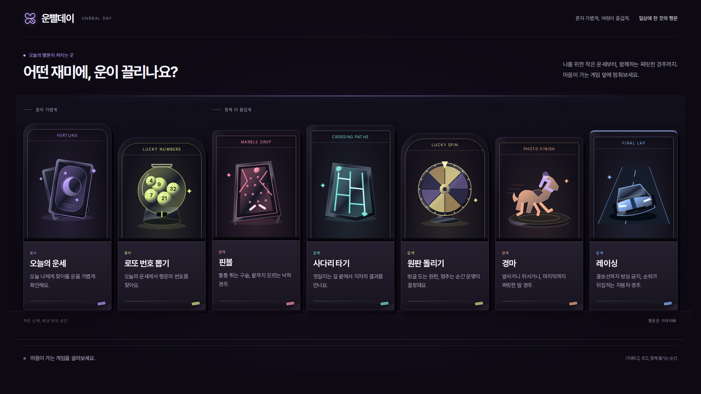
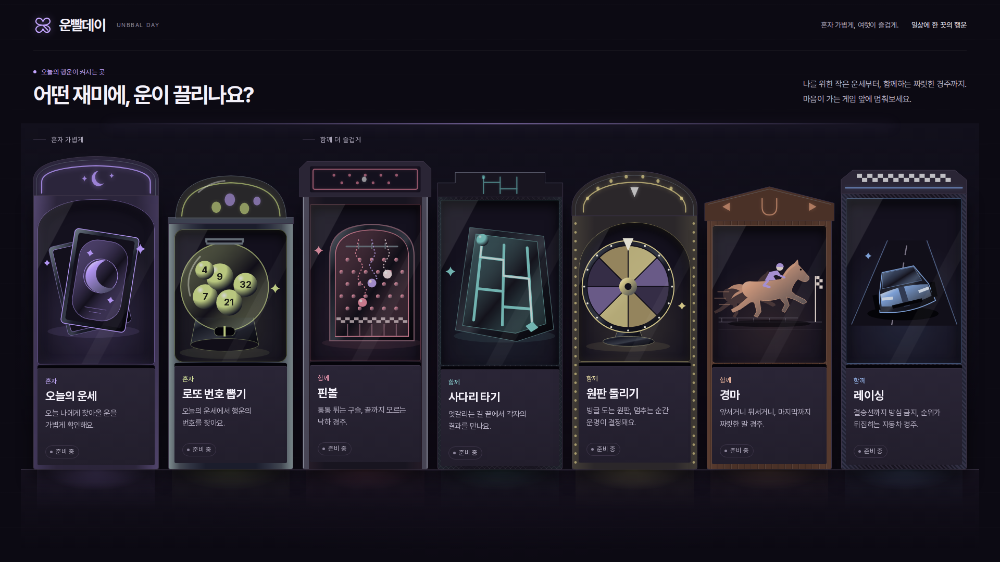
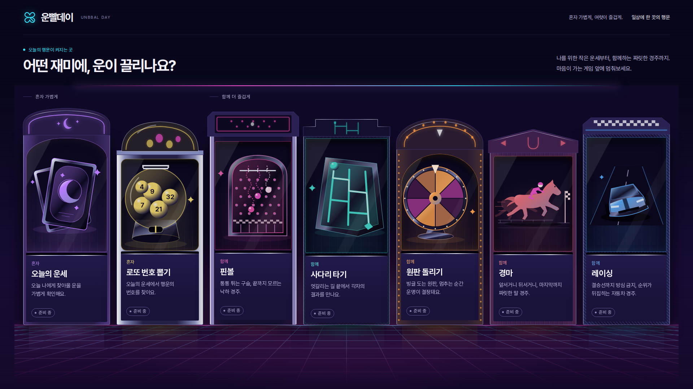
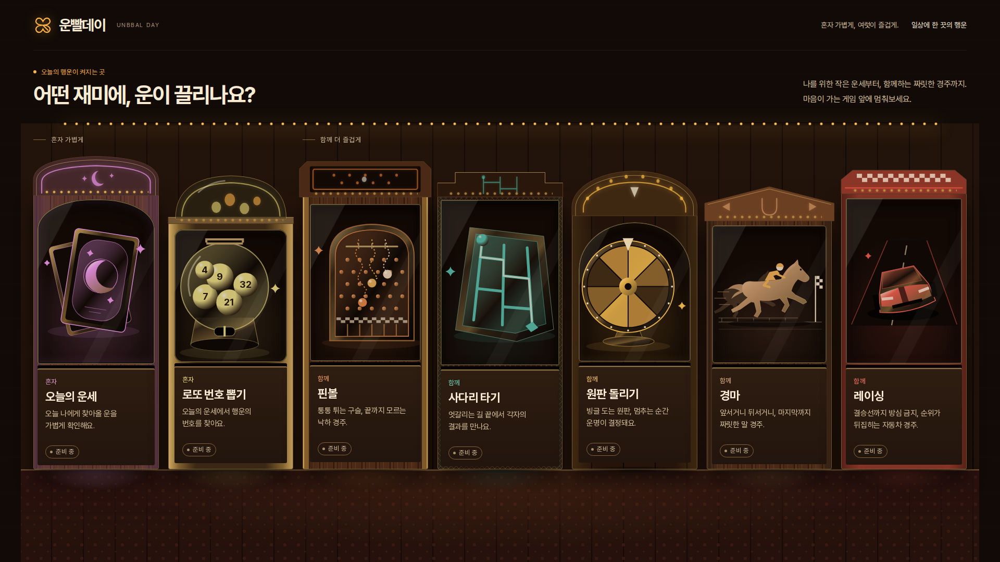
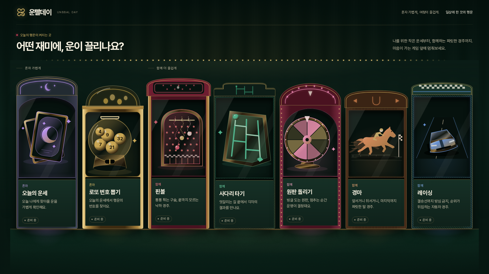
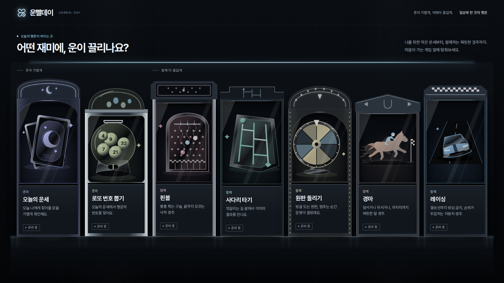
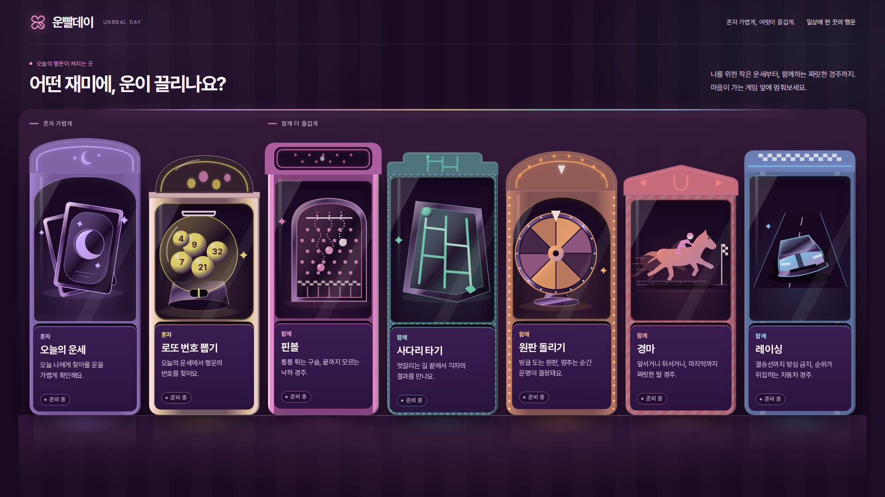

원본 아케이드 시안에 보강 항목 1~9를 반영한 기준안과, 같은 구조·문구·선택 동작 위에 테마만 바꾼 변형 5종입니다. 카드를 누르면 시안이 열립니다.

보강 전 아케이드 시안. 비교용 기준 화면입니다.

보강 1~9 반영. 게임별 기계 구조와 재질, 바닥 반사, 밝기 차등, 준비 중 표시와 안내 패널, 키보드 탐색. 다섯 테마의 공통 바탕입니다.

남보라 밤하늘에 마젠타·시안 네온, 원근 격자 바닥과 크롬 트림. 80년대 오락실의 쨍한 기대감.

우드그레인 기계와 호박색 전구 간판, 황동 트림, 따뜻한 텅스텐 빛. 70년대 게임장의 아늑함.

녹색 펠트 공간에 금색 트림, 보석 톤 게임 색, 위가 둥근 슬롯머신형 기계. 잭팟의 기대감.

차가운 회색 공간, 브러시드 알루미늄과 흰색·아이스블루 네온, 광택 바닥 반사. 가장 절제된 미래적 쇼룸.

짙은 자주 공간에 파스텔 네온, 둥근 광택 플라스틱 기계. 뽑기 기계 같은 말랑한 놀이성.